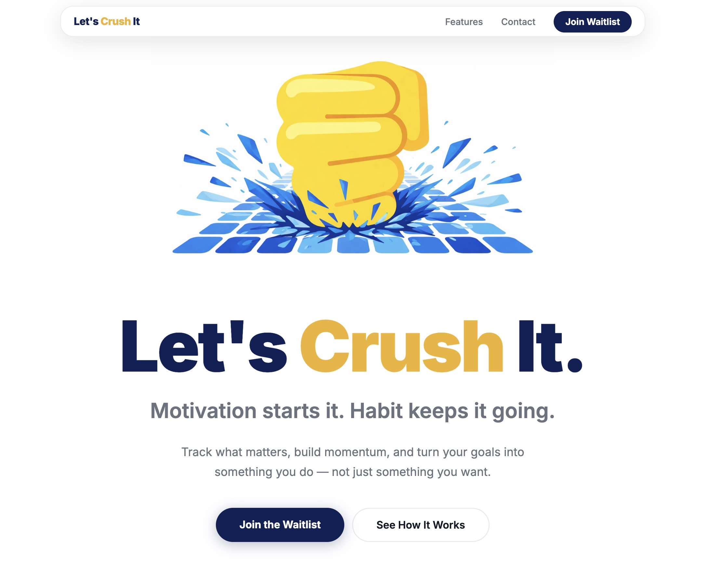

Build · Case study
I built this. And I'm
not an iOS developer.

letscrush.it ↗
All of it, with AI
iOS app · SwiftUI
A native app in a language I didn't know.
Website + copy
What you're looking at, written and built.
All the imagery
One consistent style, no designer.
Email + automations
Capture and follow-up that runs itself.
AI Tools for Startups